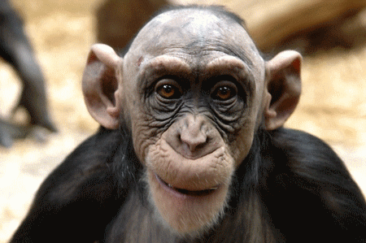

The term Monkey includes all primates that do not belong in the category of humans, apes or prosmian. Monkeys are classified in the phylum Chordata, subphylum Vertebrata, class Mammalia,order Primates. The habitat for nearly all monkeys include a tropical or subtropical climate where troops up to several hundreds conjoin as communities. Their body structure is very similar among all other monkey species. They have rather human appearing faces that are sometimes flat and they have the closest eye structure and design to humans. Their hand and feet are highly advanced for climbing and are also the only animal with opposable thumbs. Monkeys live n troops of thousands joined and travel on the hunt for food and water nomadically. The female has a monthly reproductive cycle as in apes and humans, so mating can occur spradically. Typically only one infant is coverd by a mother at a time. The baby is carried for several moths at a time and after the birth the infant is mothered for a couple months. .
| Monkey species | Baboon | Spider Monkey | Mandrill |
|---|---|---|---|
| Average Weight | 60 lbs | 13.25 lbs | 71 lbs |
| Average Height | 4.4 ft | 2 ft | 5 ft |
There are two different groups of monkeys called the New World Monkeys and Old World Monkeys. The New World Monkeys live in South America amd are typically smaller. The Old World Monkeys tend to be larger mammals that live mainly in Africa and Asia. Monkeys are also held at a high risk of endangerment. In Asia more than 70 percent of primates are on the endangered list.
There are 17 known penguin species in the world, and everyone has their own favorites. In my opinion, the top 3 species are as listed below:
They have shown a slight increase in the past few years in poplation but are still on the decline. Some of the most imortant and extrodinary mankey species include: The Baboon, Spider Monkey, and Mandrill
For more information on monkeys, you may visit: This Wikipedia Page on Monkeys.